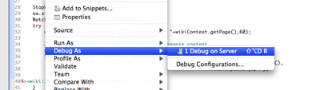
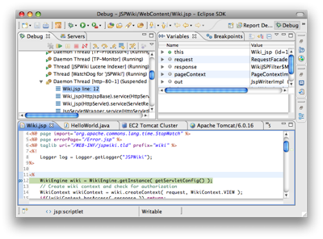

Once you've gotten your Java web application running in an EC2 Tomcat cluster, remote debugging is only a few clicks away.
Open the resource you want to debug and place a breakpoint where you'd like to start debugging. Instead of using the WTP Run on Server menu item, you'll want to select the WTP Debug on Server menu item.

If your EC2 Tomcat cluster was already running you'll probably see a message about restarting it in debug mode. You'll need to select the option to restart in debug mode in order for the AWS Toolkit to connect Eclipse's debugger to your remote application.
Once your EC2 Tomcat cluster is running in debug mode, the resource you're debugging in Eclipse should start to open. Once your breakpoint hits, Eclipse should jump into the debug perspective. From here you can remotely debug your Java web application, just like you would debug anything else in Eclipse. You have full access to the browse through the stack frames, inspect variables, toggle breakpoints, and of course, step through your code.
